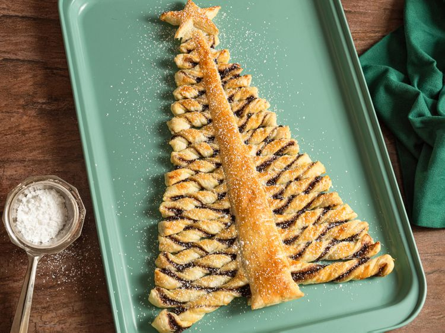

Christmas Tree Recipe

A delicious and really easy recipe for Christmas!
A really easy recipe for Christmas.
Ingredients
- 1 (17.5 ounce) package frozen puff pastry, thawed
- 4 tablespoons chocolate-hazelnut spread (such as Nutella), or more to taste, at room temperature
- 1 egg, lightly beaten
Steps
- Gather all ingredients. Preheat the oven to 375 degrees F (190 degrees C). Line a baking sheet with parchment paper.
- Roll out one puff pastry sheet into a large rectangle on a lightly floured surface and place on the prepared baking sheet.
- Lightly score puff pastry into the shape of a Christmas tree (triangle) with a wide base. Spread chocolate-hazelnut spread over the triangle in a thin layer with the back of a spoon.
- Mix cottage cheese, Parmesan cheese, and eggs together in a large bowl until thoroughly combined.
- Roll out the second sheet of puff pastry to a large rectangle and place on top of the first one. Carefully trace the shape of the chocolate-covered triangle underneath and cut out the Christmas tree shape and the trunk. Pull away excess pastry.
- Lightly score 2 lines down the middle of the triangle to form a tree trunk that is narrower at the top and gets wider towards the base. Using the trunk as a guide, cut branches into the sides of the triangle.
- Twist the branches away from you, trying to get in 2 turns on the lower branches. Continue moving up the tree, twisting away from you as you go.
- Cut a small star out of the excess pastry; place it on top of the tree. Brush the star and the whole tree with beaten egg.
- Bake in the preheated oven until puffy and golden brown, 12 to 15 minutes. Cool slightly, about 5 minutes. Slide onto a serving plate, using a piece of parchment paper if needed.